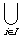
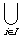

)
)  (q2 , ) = (min{q1 , q2}, ) and (q1 , )
(q2 , ) = (min{q1 , q2}, ) and (q1 , )  (q2 , ) = (max{q1 , q2}, ) and so
(q2 , ) = (max{q1 , q2}, ) and so  is closed under finite unions and intersections.
is closed under finite unions and intersections.Take a monotonic decreasing sequence of rationals (ri) converging to an irrational
 . Then  (ri, ) = (, ) and so is not in and is not a topology.
. Then  (ri, ) = (, ) and so is not in and is not a topology.